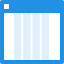

Create your artboard
Create an artboard object and set the layout settings in order to define the total width of the breakpoint, the number, and the width of columns
Make your Breakpoints
Indicate the number of different breakpoints to create and where they will be located (below or on the right of the original)
Pointgrid happens
For each new breakpoint, specify the width and the breakpoints should be created on the canvas